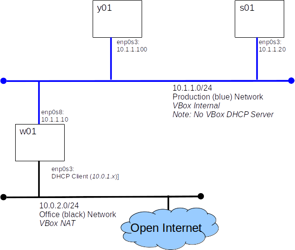

Lab: Virtual Lab Tour
Introduction
Today we will take a tour of the virtual lab environment we will be using to practice our skills as administrators. Our virtual lab contains two systems initially, we will add more later. The system named w01 is your workstation, it has a GUI and is connected to the Open Internet for your convenience. The system named s01 is our first server, it has no GUI.
Relax and take a deep breath, it's time to dive back into UNIX. This lab will require you to call upon the UNIX skills you already know and to build a few new ones.
Prerequisites:
Before you start this lab you must have:
- The comp-10018 virtual lab appliances: s01_y01_comp-10018_revc1.ova and w01_comp-10018_rev2a.ova
- Oracle VirtualBox software, found on all lab systems at the college and available from http://virtualbox.org
Before you start this lab you should be familiar with:
- UNIX commands: ls, cd, cp, mv, ...
Grading:
You will demonstrate your understanding of this lab by uploading the output of a script file to Canvas and by completing an Canvas quiz.
Overview:
We will import the basic virtual lab environment and become familiar with the skill we need to perform the following labs.

Part A: Import The Appliance
All three servers, w01, s01, and y01 are packaged in a single appliance. Every time we import the appliance, two new virtual machines will be created along with their network connections.
- Open Oracle VirtualBox software
- Select "Import Appliance" from the File menu.
- Find the appliance file on your system (comp-10018-vlab-revX.ova)
- Click "Import"
- Wait patiently, importing the VM could take a few minutes
Congratulations
You should now have the virtual lab systems available in VirtualBox.
Part B: Boot The w01 and s01
This is probably the easiest part of the lab. Simply start each VM.
Note: For this lab we only need s01 and w01.
Part C: Explore w01
Most labs will start with us logging on to w01, so let's start there.
- Log on to w01 as alice, her password is userpass
- Check Internet Access
- Open the Firefox web browser and log on to Canvas
Part D: Explore s01
Most of our administration work will be done on s01. But s01 does not have a GUI, just a very basic small console window. In this section we will log on to s01 directly at the console.
- Log on to s01 from the console window. Log on as root, her password is adminpass
- Answer the following questions:
- What is root's home directory?
- What is the largest file in the /opt/Mohawk/books directory?
Hint
ls -lh
- How many files are in the /opt/Mohawk/data directory?
Hint
ls | wc
- Check Internet Access
- Use the ping utility to see if we can contact w01
ping -c 3 10.1.1.10
- Use the ping utility to see if we can contact Google's free DNS server at 8.8.8.8
This is a good server to use for tests as it usually up, and answers pings.
ping -c 3 8.8.8.8
Expected Results
Ping to w01, 10.1.1.10, should succeed.
Ping to 8.8.8.8 should fail - s01 is not connected to the 'Net
Part E: Remote Access
Part D above should have shown us that the console on s01 is nowhere near as nice and the terminal window we can have on w01: it's small, we can't scroll back, we can't cut-and-paste. Fear not, we can access s01 from w01, not only do we get a nicer terminal, but we can work from out virtual desk, rather than hiking into the load, cold, and uncomfortable virtual server room (where they do not allow coffee).
- Log onto w01 as alice
- Open a terminal window
- Logon to s01 from w01 over the network using ssh, the secure shell.
ssh root@10.1.1.20
- Use the hostname command to verify that you are now logged on to s01
hostname
- Let the world know we were here by creating a file named /root/hello containing the text I was here
- You may use vi/vim or nano to edit the file
- For an excellent vim tutorial run the vimtutor command (only available on w01)
- A nano introduction from California's oldest community college.
- Don't forget the file name is hello not hello.txt
- Logoff s01
exit
- Use the hostname command to verify that you are 'back on' w01
hostname
Part F: Remote File Copy
We can use scp, the secure copy command, to copy files from one system to an other over the network. This is a very useful tool in every administrator's kit. The scp command works very much like the cp command you already know. To extend the cp command across the network we need to expand the format of the source and destination arguments to include user names and host names. Don't worry if this a little confusing right now, we'll have plenty of practice before the course is over ;) Some examples will help...
- Create a file in alice's home directory on w01
ls > f1.txt
- Copy a file, f1.txt, from alice's home directory on w01 to the /tmp directory on s01.
- Log on to w01 as alice and open a terminal window.
- Use scp to copy f1.txt to s01
scp f1.txt root@10.1.1.20:/tmp/f1.txt
- Log on to the console of s01 as root
- Check that /tmp/f1.txt exists and has a recent modification date.
ls -l /tmp/f1.txt
Part G: Running A Grading Script
Throughout this course, including exams, we will run scripts on our systems to collect configuration information for grading. These scripts are located on Canvas and the configuration reports they output must be uploaded to Canvas for grading. But, our servers, like s01, are on the blue network and can not access Canvas. This is where scp comes to the rescue. We now will walk through this process.
Be patient and be careful, there is a lot going on here. Take a deep breath and go slowly.
These steps run on w01, as alice
- Open Firefox and logon to Canvas
- Download the file host_info_1.zip from Canvas to w01. Download this file to the Downloads directory. This file is associated with the dropbox for this lab.
- Unzip the file.
cd ~/Downloads
unzip host_info_1.zip
- Check that the unzip succeeded, (/home/alice/Downloads/host_info_1.sh should now exist)
ls -l ~/Downloads
- Copy the script to root's home directory on s01
cd ~/Downloads
scp ./host_info_1.sh root@10.1.1.20:.
These steps run on s01, as root
- Run the script on s01
cd
./host_info_1.sh
- Check that the host report was generated (we're looking for s01_report.html)
ls -l
These steps run back on w01 as alice
- Copy the report we just created on s01 to w01
cd
scp root@10.1.1.20:./s01_report.html .
- Inspect the report with Firefox
firefox s01_report.html
- Submit s01_report.html to Canvas, placing it in the drop-box for this lab.
Part H: Quiz
Complete the Canvas quiz for this lab.
Part I: Put Away Our Toys
Like most computer systems, we should never just power-off our systems, we should shut them down gracefully.
- Log on to s01 as root (root's password is adminpass
- Run the shutdown command
shutdown -h now
- From the GUI on w01 select Shutdown from the alice menu found in the upper right hand corner
- Shutting down y01. If you started y01, you can shut it down by closing the host VM window and selecting 'Send the shutdown signal'.
Note: Our systems are packaged as appliances so we can get away with just powering them down, they will be created from scratch next lab. This might come in handy at the end of a lab when time is short.